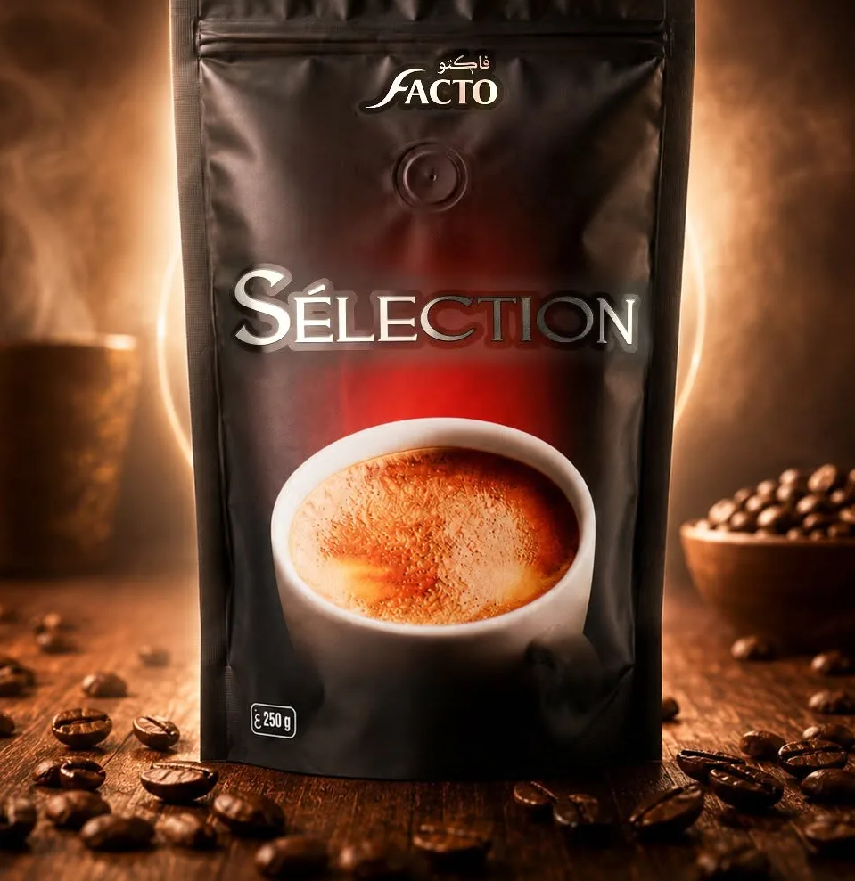
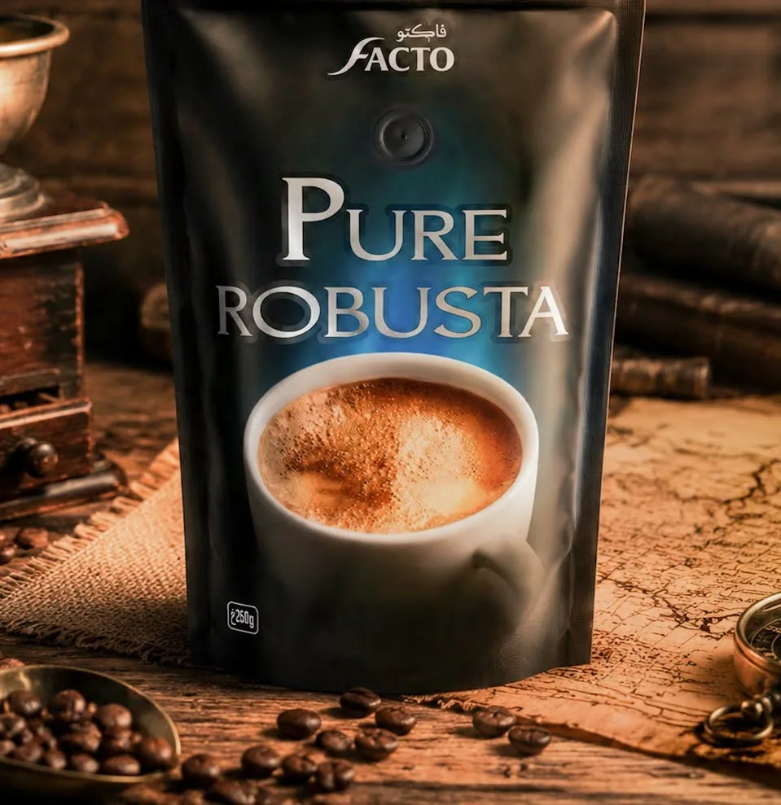
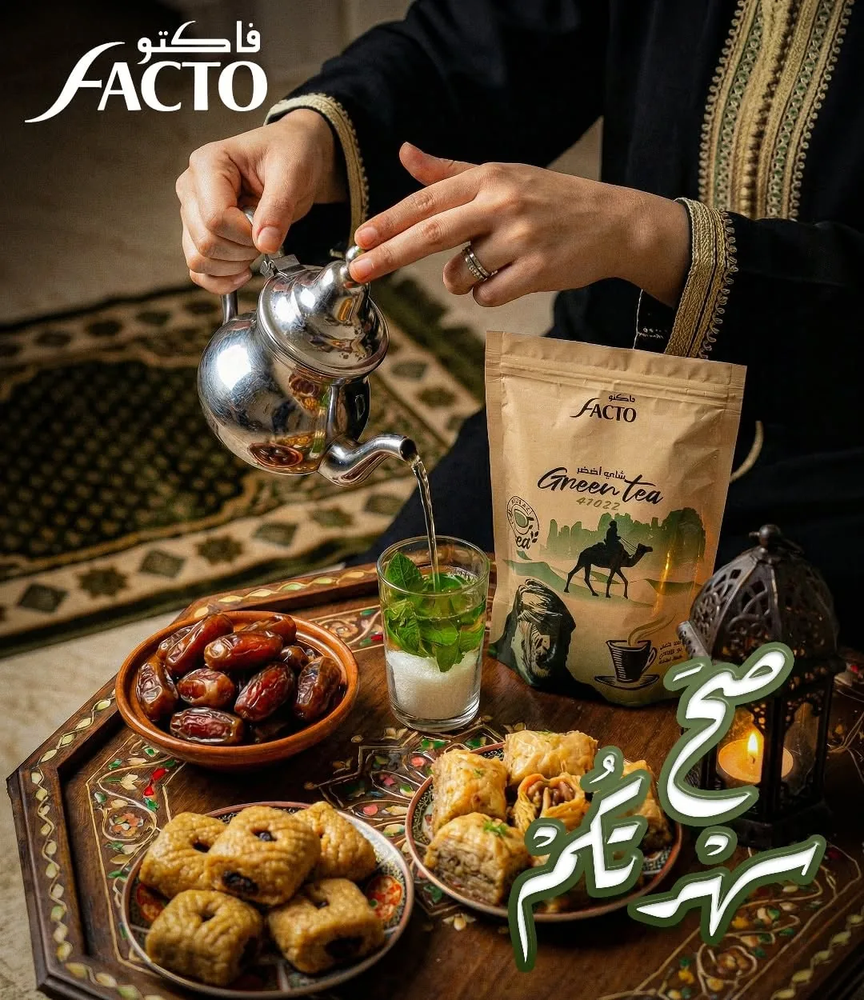
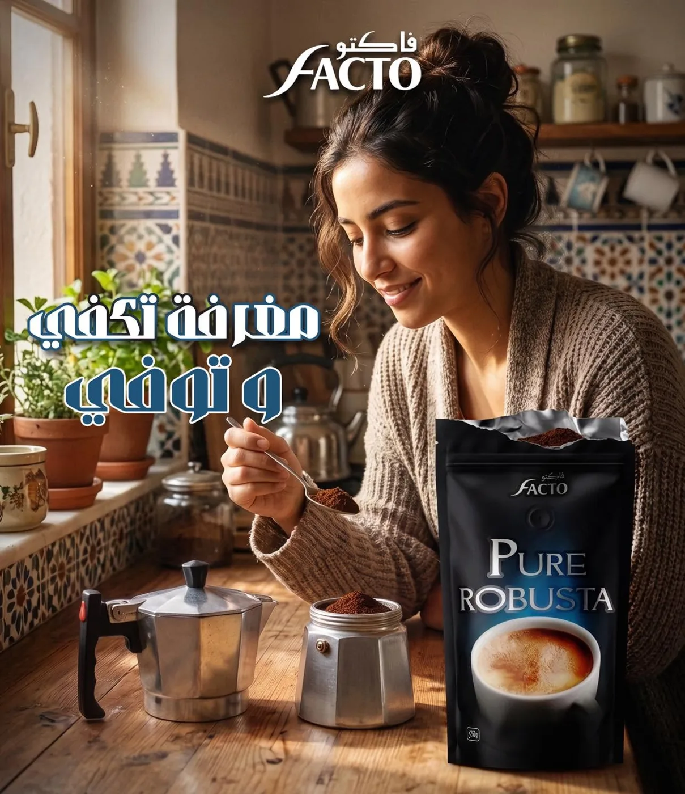
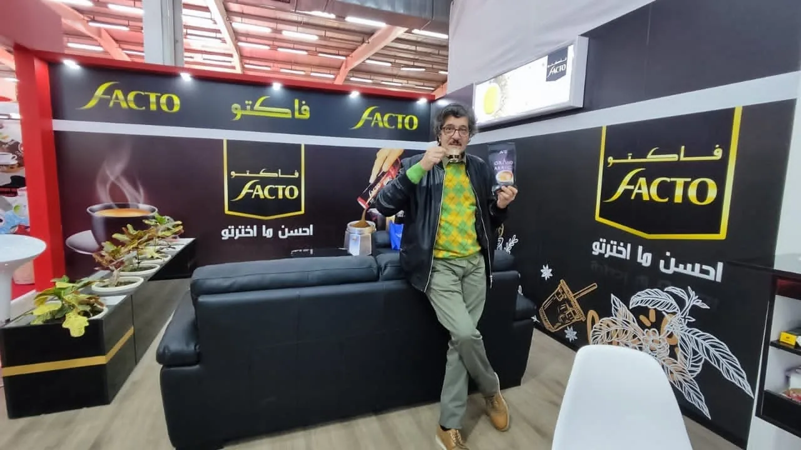
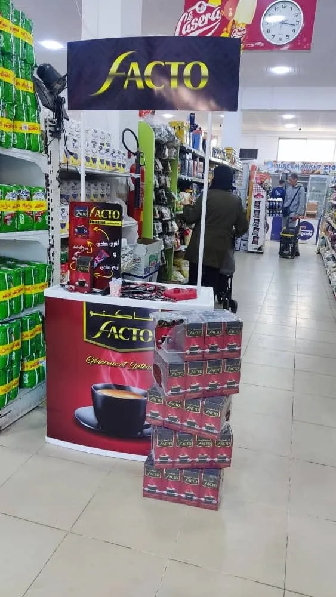

Le café qui rassemble la maison.
حب كبير يتقال في فنجان صغير
Grand Arabica, Sélection, Pure Robusta : trois caractères, une même exigence. Facto torréfie et moud ses cafés pour le rituel algérien, du premier fenjal du matin à la قهوة العصر partagée en famille.
de café
Trois sachets, trois caractères.
Chaque recette Facto a sa couleur et sa personnalité. Choisissez la vôtre selon votre façon de boire le café.
Grand Arabica
100 % Arabica. Une tasse ronde et parfumée, aux notes douces et à l'amertume légère.
Intensité
Sélection
L'assemblage signature de la maison : l'équilibre parfait entre douceur et caractère.
Intensité
Pure Robusta
Corsé, intense, généreux en crème. Le café qui donne le ton de la journée.
Intensité
Au cœur des moments qui comptent.
- 01Le café du matinUn Pure Robusta bien serré pour démarrer la journée.
- 02La qahwa de l'après-midiLe Grand Arabica, doux et parfumé, à partager avec les gâteaux.
- 03Les grandes occasionsRamadan, Aïd, visites : Sélection accompagne les tables de fête.
« Un grand amour se dit dans une petite tasse. »
Une marque vivante.
Des visuels qui racontent la vie algérienne, partagés chaque semaine avec une communauté de plus de 30 000 personnes.

En magasin, en salon, près de vous.
Stands de dégustation, présentoirs en points de vente et participation aux grands salons professionnels : Facto va à la rencontre de ses clients partout en Algérie.
Voir nos salons →

